Unidad Temática I. Operaciones básicas de los Sistemas Manejadores de Bases de Datos Relacionales (SMBDR)
Unidad de competencia
Usa instrucciones de operaciones de manejo de información con base en el SQL como lenguaje estándar de los SMBDR.
Los siguientes temas se tratan en esta unidad
1.1 Funciones de SMBDR
La analogía del bibliotecario mágico
Haciendo una analogía, un SMBDR es como un bibliotecario mágico muy veloz. Si la base de datos es un cuarto lleno de miles de libros sueltos, el SMBDR es el bibliotecario que sabe exactamente en qué estante está cada página, quién tiene permiso de leerla y toma notas si alguien cambia una palabra.
Por lo anterior nos damos cuenta de la importancia de los SMBDR. Antes de continuar es necesario conocer qué es un Sistema Manejador de Bases de Datos Relacional (SMBDR).
¿Qué es un SMBDR?
Es un conjunto de programas, subrutinas o procedimientos que nos van a permitir gestionar (administrar) una base de datos. Un SMBDR es un software que sirve para estructurar, almacenar, manipular, ordenar, proteger y buscar la información de forma rápida y segura. Sirve como un intermediario entre las personas y los datos guardados en una computadora.
Un SMBDR no es nomás una lista de datos guardados. Es un sistema armado con instrucciones de SQL (Lenguaje Estructurado de Consulta) que trabajan juntas para definir, cambiar y cuidar lo más valioso que tiene una empresa, una escuela o cualquier organización, que es su información.
Un SMBDR tiene tres funciones principales
- Definición o descripción
- Manipulación
- Control
Definición o descripción (el plano)
Para cumplir con esta función, es necesario utilizar el Lenguaje de Definición de Datos (DDL) del lenguaje SQL (Lenguaje Estructurado de Consulta). Se le dice el plano porque ahí se definen las tablas con sus columnas, por ejemplo la tabla Alumno con las columnas Boleta, Nombre_Alumno, Edad_Alumno y Teléfono.
Las instrucciones del DDL sirven para crear con CREATE, modificar con ALTER o eliminar con DROP objetos como estos
- Tablas
- Vistas
- Índices
- Procedimientos
- Triggers
- Transacciones
Manipulación
Para cumplir con esta función, es necesario utilizar el Lenguaje de Manipulación de Datos (DML) del lenguaje SQL (Lenguaje Estructurado de Consulta). El DML es un conjunto de instrucciones (comandos) que sirven para modificar el estado de los datos que residen en las tablas (registros o filas), respetando las restricciones de integridad. Permite a los usuarios hacer cambios en los datos reales.
Cualquiera de estas instrucciones sirve para uno o varios registros de la tabla
INSERTpara agregar nuevos registros.DELETEpara borrar registros.UPDATEpara modificar valores de los registros.SELECTpara efectuar cualquier consulta.
Control (el Guardián)
Para cumplir con esta función, es necesario utilizar el Lenguaje de Control de Datos (DCL) del lenguaje SQL (lenguaje estructurado de consulta). Asegura que nadie robe la información ni la borre por error. Controla que dos personas no cambien el mismo dato al mismo tiempo (concurrencia) y crea copias de seguridad por si la computadora se apaga de repente.
Las instrucciones del DCL sirven para dar o quitar estos permisos
GRANT— autoriza un privilegio sobre un objeto.REVOKE— retira un privilegio ya autorizado.
Los permisos que se les pueden dar a los usuarios sobre tablas y vistas son sobre las instrucciones del DML
INSERTpara agregar nuevos registros.DELETEpara borrar registros.UPDATEpara modificar valores de los registros.SELECTpara efectuar cualquier consulta.
Esta tabla resume de forma general las tres funciones de un SMBDR
Tabla 1 — Funciones del SMBDR
| Función | Para qué sirve | Lenguaje (instrucciones) | Ejemplo |
|---|---|---|---|
| Definición o descripción | Manejar los objetos de la base de datos, como crear la estructura donde se va a guardar la información (las tablas). | Lenguaje de Definición de Datos (DDL), con comandos como CREATE, ALTER y DROP. |
Crear una tabla llamada Cliente con las columnas Id_Cliente, Nombre_Cliente, Correo_Cliente y Teléfono_Cliente. |
| Manipulación | Trabajar directo con los registros para agregarlos, actualizarlos, consultarlos y eliminarlos. | Lenguaje de Manipulación de Datos (DML), con las instrucciones INSERT, UPDATE, SELECT y DELETE. |
Agregar, actualizar, consultar y eliminar los registros de las tablas. |
| Control | Mantener los datos seguros, privados y sin errores. | Reglas de seguridad, control de concurrencia y recuperación ante fallas. | Impedir que un usuario sin permiso haga algo que no le corresponde. |
1.2 Modelo relacional y las 12 reglas de Codd
La analogía del archivero de listas de la escuela
Piensa en el modelo relacional como un archivero lleno de listas. Cada lista es una tabla, cada renglón es un alumno y cada columna es un dato suyo, como la boleta o el nombre. Las listas se unen con un dato en común, como la boleta, y así no se repite información. Esta idea la propuso Edgar Frank Codd, investigador de IBM, en 1970, y hoy es la base de casi todos los SMBDR.
Tabla 2 — Palabras básicas del modelo relacional
| Término | ¿Qué es? | Ejemplo |
|---|---|---|
| Relación | Tabla con datos de un mismo tema. | Tabla Alumnos |
| Tupla | Fila o registro. | Un alumno |
| Atributo | Columna o campo. | nombre |
| Dominio | Valores permitidos en una columna. | Enteros positivos |
| Llave primaria (PK) | Columna que hace única a cada fila. | boleta |
| Llave foránea (FK) | Columna que apunta a la PK de otra tabla. | id_carrera |
Codd escribió trece reglas, de la 0 a la 12, que un sistema debe cumplir para ser de verdad relacional
Tabla 3 — Las trece reglas de Codd
| Regla | Nombre | En pocas palabras |
|---|---|---|
| 0 | Fundamental | Todo se maneja de forma relacional. |
| 1 | Información | Todo dato vive en tablas. |
| 2 | Acceso garantizado | Tabla, PK y columna llevan a cada dato. |
| 3 | Nulos | Los valores vacíos se tratan igual siempre. |
| 4 | Catálogo en línea | La descripción de la base también son tablas. |
| 5 | Lenguaje completo | Un solo lenguaje, como SQL, para todo. |
| 6 | Vistas | Las vistas se pueden actualizar. |
| 7 | Operaciones en grupo | Altas, cambios y bajas de muchas filas a la vez. |
| 8 | Independencia física | Cambiar el disco no afecta a los programas. |
| 9 | Independencia lógica | Cambiar tablas no afecta a los programas. |
| 10 | Integridad | Las reglas de integridad viven en el catálogo. |
| 11 | Distribución | Funciona igual con datos en varios servidores. |
| 12 | No subversión | Nada puede saltarse las reglas de integridad. |
1.3 Componentes y ambiente de trabajo
La analogía del taller mecánico
Un SMBDR es como un taller mecánico con herramientas (software), autos (datos), mecánicos (usuarios) y un manual de trabajo (reglas). Casi siempre trabaja en modo cliente y servidor. Los clientes mandan sus pedidos en SQL por la red y el servidor los atiende uno por uno para que no se pierda ningún dato.
Tabla 4 — Partes del servidor de un SMBDR
| Componente | ¿Qué hace? |
|---|---|
| Procesador de consultas | Revisa el SQL y busca la forma más rápida de resolverlo. |
| Gestor de transacciones | Hace cada operación completa o nada (ACID) y ordena a los usuarios que trabajan a la vez. |
| Gestor de almacenamiento | Lee y escribe en disco y guarda en memoria lo que más se usa. |
| Catálogo del sistema | Registra qué tablas, índices, usuarios y permisos existen. |
Figura 1. Diagrama propio. El modo cliente y servidor y las partes de adentro de un SMBDR.
1.4 Estructura de almacenamiento y objetos
La analogía del edificio de archivo
Una base de datos es como un edificio de archivo. El edificio es la base de datos, cada piso es un esquema y los archiveros son los objetos, como tablas, vistas e índices. En el sótano están los archivos del disco. Así, cada objeto tiene una parte lógica, la que manejas con SQL, y una parte física, la que se guarda en el disco.
Tabla 5 — Objetos que se pueden manejar en un SMBDR
| Objeto | ¿Qué es? |
|---|---|
| Tabla | Filas y columnas donde se guardan los datos. |
| Vista | Consulta guardada que se usa como tabla, sin copiar datos. |
| Índice | Lista que acelera las búsquedas. |
| Procedimiento almacenado | Código SQL guardado que se ejecuta en el servidor. |
| Disparador (trigger) | Código que corre solo ante un INSERT, UPDATE o DELETE. |
| Secuencia | Genera números consecutivos para las llaves. |
| Cursor | Recorre fila por fila el resultado de una consulta. |
Cada columna lleva un tipo de dato que indica qué valores acepta y cuánto espacio ocupa
Tabla 6 — Grupos de tipos de datos en SQL
| Categoría | Tipos comunes | Ejemplo de uso |
|---|---|---|
| Números enteros | INT, SMALLINT, BIGINT | edad INT |
| Números con decimales | DECIMAL(p,s), FLOAT | precio DECIMAL(8,2), ideal para dinero |
| Texto | VARCHAR(n), CHAR(n), TEXT | nombre VARCHAR(100) |
| Fecha y hora | DATE, DATETIME, TIMESTAMP | fecha_nacimiento DATE |
| Booleano | BOOLEAN, BIT | activo BOOLEAN |
Por dentro, esos objetos se guardan por niveles, uno dentro de otro
Figura 2. Diagrama propio. Los niveles de almacenamiento, del más grande al más chico. Tablespace, luego Archivo de datos, luego Extensión, luego Bloque o Página y al final la Fila.
Tabla 7 — Tipos de índice
| Tipo | ¿Qué hace? | ¿Cuántos por tabla? |
|---|---|---|
| Clusterizado | Decide el orden real de las filas en el disco. | Uno, casi siempre en la PK |
| No clusterizado | Lista aparte que apunta a las filas sin moverlas. | Varios. Es el que crea CREATE INDEX |
Práctica. Clínica veterinaria · Parte 1. Del DER a la base de datos (DDL)
Esta práctica acompaña todo el polilibro. Aquí, en el tema 1.4, se diseña y se construye la base de datos veterinaria. En el tema 1.5 se llena con datos, y en las unidades II y III se consulta, se protege, se automatiza y se respalda. Siempre es la misma base, así que cada tema se apoya en lo que ya hiciste.
a) Objetivo. Pasar un diagrama entidad-relación (DER) al modelo relacional y construirlo físicamente con las instrucciones del DDL.
b) Introducción. Se aplican las reglas del modelo relacional para convertir el DER en tablas. Después se usan CREATE, ALTER y DROP para crear la base de datos y sus objetos, que son tablas, vista e índices.
c) Requerimientos. MySQL 8.0 y MySQL Workbench 8.0 CE. Conocer el modelo relacional (tema 1.2) y los objetos y tipos de datos de este tema.
d) Caso de estudio. Una clínica veterinaria quiere llevar el control de sus pacientes. Cada dueño registra a una o varias mascotas. Cada mascota puede tener muchas consultas y cada consulta la atiende un solo veterinario. En una consulta se pueden recetar varios medicamentos, y un mismo medicamento aparece en muchas consultas. De cada receta se guarda la cantidad y las indicaciones.
DISEÑO CONCEPTUAL Diagrama entidad-relación
Figura 3. Diagrama propio. DER de la clínica veterinaria. Los rectángulos son entidades, los rombos son relaciones y el atributo subrayado es el identificador de cada entidad. La relación receta es N:M y tiene atributos propios.
DISEÑO LÓGICO Del DER al modelo relacional
Para pasar el DER a tablas se aplican tres reglas
- Cada entidad se vuelve una tabla y su identificador se vuelve la llave primaria (PK).
- En una relación 1:N, la PK del lado "1" se copia como llave foránea (FK) en la tabla del lado "N". Por eso
mascotallevaid_duenoyconsultallevaid_mascotaeid_veterinario. - Una relación N:M se vuelve una tabla intermedia. Su PK es la unión de las dos FK y guarda los atributos de la relación. Así nace
receta.
dueno (id_dueno, nombre, telefono, direccion, correo)
veterinario (id_veterinario, nombre, cedula, especialidad, telefono, sueldo)
medicamento (id_medicamento, nombre, presentacion, precio, existencia)
mascota (id_mascota, nombre, especie, raza, fecha_nacimiento, sexo, peso_kg, id_dueno)
consulta (id_consulta, fecha, hora, motivo, diagnostico, costo, id_mascota, id_veterinario)
receta (id_consulta, id_medicamento, cantidad, indicaciones)
Lo subrayado es la PK y lo que está en cursiva es FK. El orden importa al crear las tablas. Primero van las que no dependen de ninguna otra (catálogos) y después las que tienen llaves foráneas. Si se invierte, MySQL marca error porque la tabla referenciada todavía no existe.
PASO 1 · DDL Crear la base de datos
CREATE DATABASE crea el contenedor y USE lo deja activo para las instrucciones siguientes. utf8mb4 permite guardar acentos y la ñ. El DROP DATABASE IF EXISTS del inicio deja volver a correr el script desde cero sin errores.
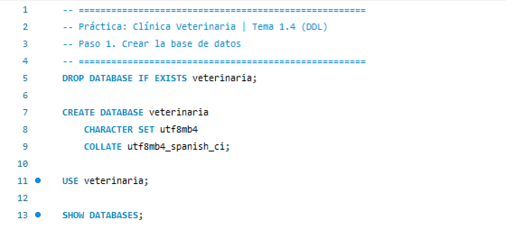
Resultado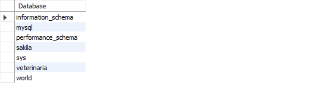
Figura 4. Captura propia en MySQL Workbench. SHOW DATABASES confirma que ya existe veterinaria.
PASO 2 · DDL Tablas catálogo dueño y veterinario
Estas tablas no dependen de ninguna otra. Cada columna lleva su tipo de dato (Tabla 6). Los teléfonos van en CHAR(10) porque siempre miden lo mismo y el sueldo va en DECIMAL(10,2) porque es dinero. NOT NULL, UNIQUE y CHECK son restricciones que no dejan entrar datos inválidos, por ejemplo dos veterinarios con la misma cédula o un sueldo negativo.
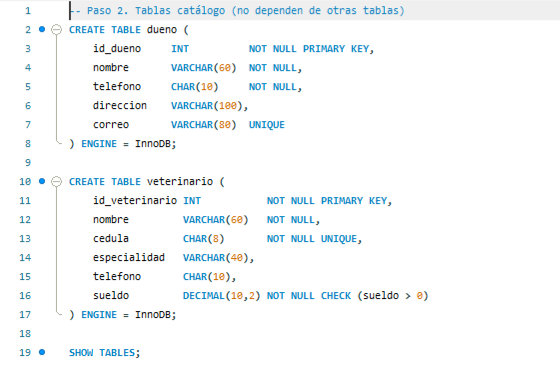
Resultado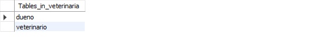
Figura 5. Captura propia. Se crearon las dos primeras tablas.
PASO 3 · DDL Medicamento y la primera llave foránea
DEFAULT 0 pone la existencia en cero si no se indica otra cosa. En mascota aparece la primera llave foránea, CONSTRAINT ... FOREIGN KEY (id_dueno) REFERENCES dueno. Con ella MySQL no deja registrar una mascota cuyo dueño no exista. Es la relación 1:N "un dueño tiene muchas mascotas" del DER.
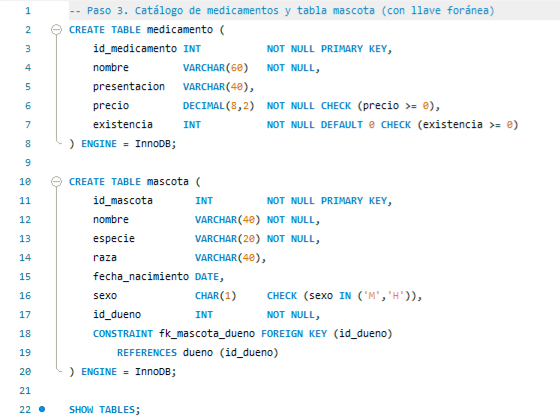
Resultado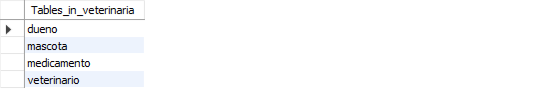
Figura 6. Captura propia. Ya van cuatro tablas.
PASO 4 · DDL Consulta, una tabla con dos llaves foráneas
consulta depende de mascota y de veterinario, por eso se crea después de ellas. Las fechas y horas van en DATE y TIME, no en texto, para poder ordenarlas y compararlas. En el resultado de DESCRIBE, PRI marca la llave primaria y MUL marca las llaves foráneas.
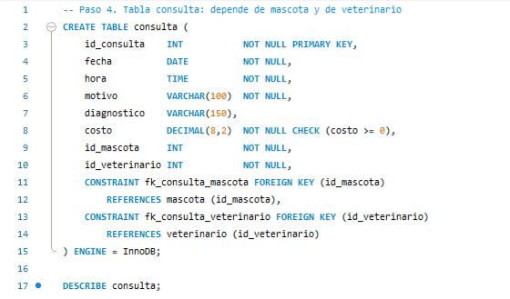
Resultado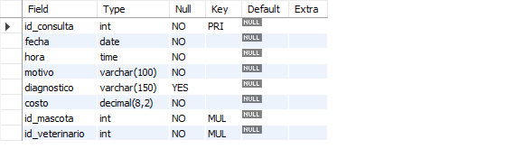
Figura 7. Captura propia. Estructura de la tabla consulta.
PASO 5 · DDL Receta, la tabla intermedia N:M
La relación N:M entre consulta y medicamento se vuelve una tabla propia. Su llave primaria es compuesta, PRIMARY KEY (id_consulta, id_medicamento), así que el mismo medicamento no se puede repetir en la misma consulta. Además guarda los atributos de la relación, que son cantidad e indicaciones.
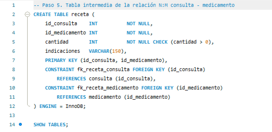
Resultado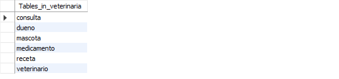
Figura 8. Captura propia. Las seis tablas del modelo relacional ya existen.
PASO 6 · DDL Modificar la estructura con ALTER TABLE y DROP TABLE
Un diseño casi nunca queda perfecto a la primera. ALTER TABLE ... ADD COLUMN agrega una columna sin perder lo que ya hay, y con AFTER se elige dónde queda. DROP COLUMN quita una columna. DROP TABLE borra la tabla completa, con estructura y datos, y no se puede deshacer. Por eso se prueba con una tabla que no sirve.
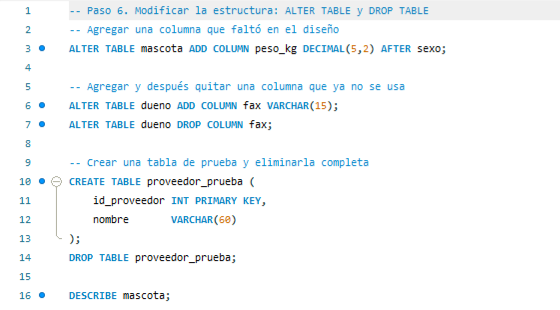
Resultado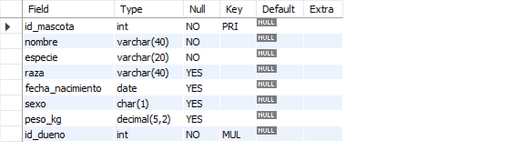
Figura 9. Captura propia. peso_kg quedó justo después de sexo.
PASO 7 · DDL Otros objetos, vista e índices
Una vista guarda una consulta con nombre. v_mascotas_duenos junta cada mascota con su dueño para no reescribir el JOIN, y se usa otra vez en el tema 2.1. Los índices aceleran las búsquedas frecuentes, como mascotas por especie o consultas por fecha. En el resultado se ven tres índices en mascota. Son PRIMARY, que es el clusterizado, el que MySQL crea solo para la llave foránea y el nuevo idx_mascota_especie.
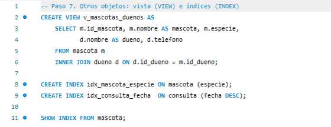
Resultado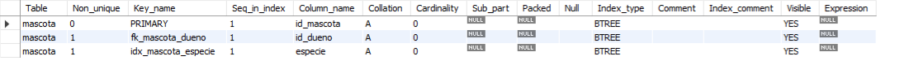
Figura 10. Captura propia. Los tres índices son de tipo BTREE.
PASO 8 ¿Dónde y cómo se guarda todo?
Este paso muestra la parte física del tema. MySQL guarda cada base como una carpeta dentro de su directorio de datos. Con el motor InnoDB, cada tabla es un archivo .ibd dividido en páginas de 16 KB. Es el nivel "Bloque / Página" de la Figura 2.
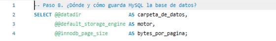
ResultadoFigura 11. Captura propia. Carpeta de datos, motor por omisión y tamaño de página de 16 384 bytes.
El diccionario de datos information_schema dice cuánto ocupa cada objeto. Aunque las tablas todavía están vacías, cada una ya tiene reservada una página (16 384 bytes). Las que tienen índices extra ocupan más en bytes_indices. La vista no ocupa nada porque solo guarda la consulta, no datos.
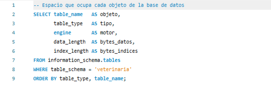
Resultado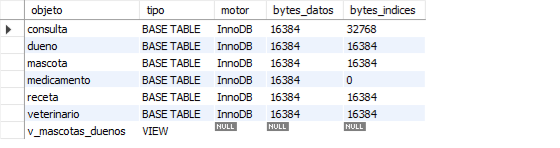
Figura 12. Captura propia. Espacio en disco de cada tabla y de la vista.
COMPROBACIÓN Del diseño a la base construida
Con Database › Reverse Engineer, Workbench lee la base ya creada y dibuja su diagrama EER. Es la forma de comprobar que lo construido coincide con el DER de la Figura 3. En el diagrama la llave amarilla es la PK, el rombo rojo es la FK y la notación "pata de gallo" marca el lado "muchos" de cada relación.
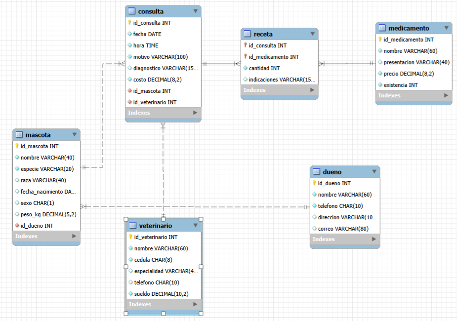
Figura 13. Captura propia. Diagrama EER obtenido por ingeniería inversa de la base veterinaria.
Observaciones. La base veterinaria quedó lista, con 6 tablas, 1 vista y sus índices, y coincide con el diseño. En el tema 1.5 se le cargan datos con el DML.
1.5 Instrucciones estándar de lenguaje estructurado de consulta (Structured Query Language/SQL)
La analogía del idioma para hablarle al bibliotecario
Si el SMBDR es el bibliotecario mágico del tema 1.1, SQL es el idioma con el que le hablas. Tú solo le dices qué quieres y él ve cómo conseguirlo. Casi todos los manejadores lo entienden, con pequeñas diferencias de acento, y se divide en cuatro partes según lo que le pidas.
Tabla 8 — Las cuatro partes del SQL
| Parte | ¿Para qué sirve? | Instrucciones principales |
|---|---|---|
| DDL (Data Definition Language) | Crear o cambiar la estructura, como armar los muebles de la biblioteca. | CREATE, ALTER, DROP, TRUNCATE |
| DML (Data Manipulation Language) | Agregar, cambiar, borrar y consultar datos, como mover los libros. | SELECT, INSERT, UPDATE, DELETE |
| DCL (Data Control Language) | Dar o quitar permisos, como decidir quién tiene llave de cada sala. | GRANT, REVOKE |
| TCL (Transaction Control Language) | Cerrar un trámite completo o deshacerlo para que no quede a medias. | COMMIT, ROLLBACK, SAVEPOINT |
Práctica. Clínica veterinaria · Parte 2. Trabajar con los datos (DML)
La base veterinaria que se construyó en el tema 1.4 está vacía. Aquí se llena con INSERT, se corrige con UPDATE, se limpia con DELETE y se consulta con SELECT. El DCL (GRANT, REVOKE) se practica en el tema 2.2 y el TCL (transacciones) en el tema 2.4, sobre esta misma base.
a) Objetivo. Usar el Lenguaje de Manipulación de Datos (DML) para gestionar la información de la base de datos.
b) Introducción. Se usan las instrucciones INSERT, UPDATE, DELETE y SELECT, además de las funciones AVG, MIN, MAX, COUNT y SUM.
c) Requerimientos. MySQL 8.0 y MySQL Workbench, con la base veterinaria del tema 1.4 ya creada.
d) Orden de captura. Primero se llenan las tablas que no dependen de nadie y después las que tienen llaves foráneas, en el mismo orden en que se crearon, o sea dueño, veterinario, medicamento, mascota, consulta y receta.
PASO 1 · INSERT Registrar a los dueños
INSERT INTO tabla (columnas) VALUES (...) agrega registros. Con un solo INSERT se pueden meter varias filas si se separan con comas. Se escriben los nombres de las columnas para que el orden de los valores quede claro. Los textos y las fechas van entre comillas simples y los números sin comillas.
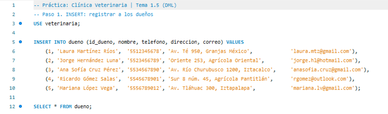
Resultado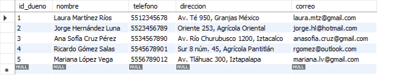
Figura 14. Captura propia en MySQL Workbench. Los cinco dueños quedaron registrados.
PASO 2 · INSERT Registrar a los veterinarios
El sueldo va sin comillas porque es DECIMAL. La cédula es UNIQUE, así que MySQL no deja dar de alta a dos veterinarios con la misma.
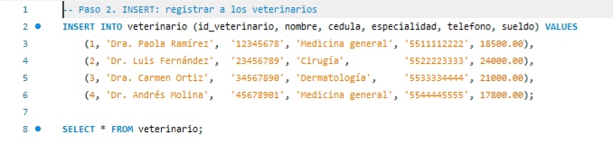
Resultado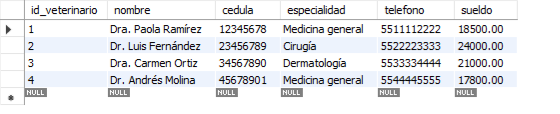
Figura 15. Captura propia en MySQL Workbench. Tabla veterinario con sus cuatro registros.
PASO 3 · INSERT Catálogo de medicamentos
Se captura la existencia de cada medicamento. Esa columna se usa en la Unidad II para descontar inventario con una transacción cada vez que se receta.
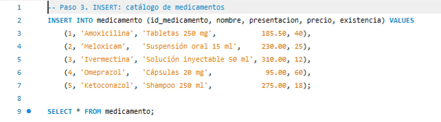
Resultado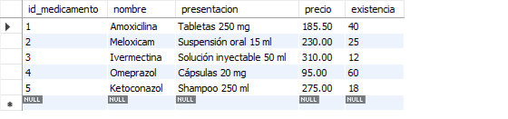
Figura 16. Captura propia en MySQL Workbench. Catálogo de medicamentos con precio y existencia.
PASO 4 · INSERT Registrar las mascotas
Cada mascota lleva el id_dueno de alguien que ya existe. Por eso los dueños se registraron primero. Las fechas van en formato 'AAAA-MM-DD', que es el que entiende el tipo DATE.
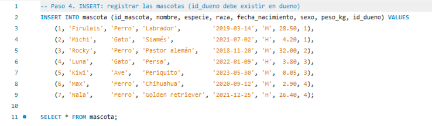
Resultado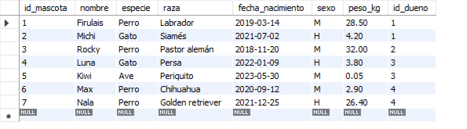
Figura 17. Captura propia en MySQL Workbench. Siete mascotas, cada una ligada a su dueño.
PASO 5 · INSERT Registrar las consultas
Cada consulta apunta a una mascota y a un veterinario. La hora se escribe como 'HH:MM' y MySQL la guarda en TIME con segundos.
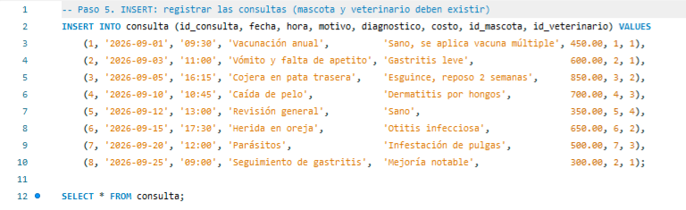
Resultado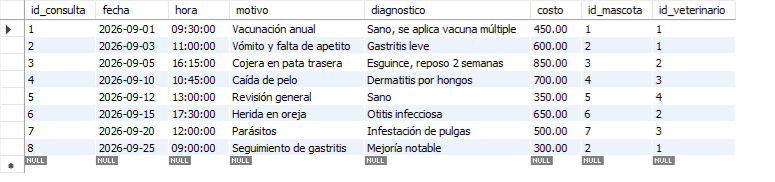
Figura 18. Captura propia en MySQL Workbench. Ocho consultas del mes de septiembre.
PASO 6 · INSERT Llenar la tabla intermedia receta
Aquí se ve la relación N:M funcionando. La consulta 6 tiene dos medicamentos y el medicamento 4 (Omeprazol) aparece en dos consultas distintas.
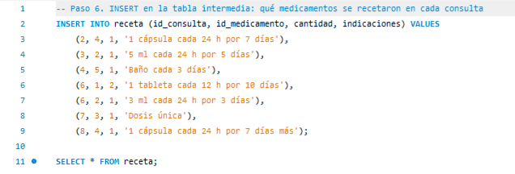
Resultado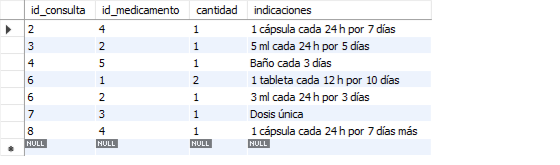
Figura 19. Captura propia en MySQL Workbench. Qué se recetó en cada consulta.
PASO 7 · INTEGRIDAD La llave foránea protege los datos
Se intenta registrar a Toby con el dueño 99, que no existe. MySQL rechaza la inserción con el error 1452, a foreign key constraint fails. Es la integridad referencial del modelo relacional (tema 1.2) funcionando, sin que el programador tenga que revisarlo a mano.
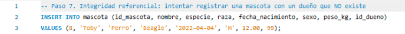
Resultado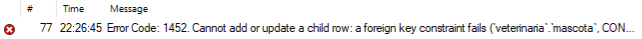
Figura 20. Captura propia en MySQL Workbench. MySQL no permite una mascota sin dueño válido.
PASO 8 · UPDATE Modificar datos existentes
UPDATE ... SET ... WHERE cambia valores de registros que ya existen. Nunca se olvida el WHERE, porque sin él se modifican todas las filas. Workbench trae activado el modo seguro (safe updates), que no deja correr un UPDATE o DELETE si el WHERE no usa la llave primaria.
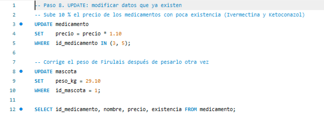
Resultado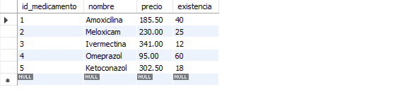
Figura 21. Captura propia en MySQL Workbench. Ivermectina pasó de 310.00 a 341.00 y Ketoconazol de 275.00 a 302.50 (+10 %).
PASO 9 · DELETE Eliminar registros
DELETE FROM ... WHERE borra filas completas. Se pudo eliminar a Mariana porque no tiene mascotas. Si se intentara borrar a un dueño con mascotas, la llave foránea lo impediría, igual que en el paso 7.
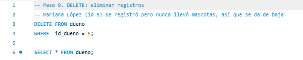
Resultado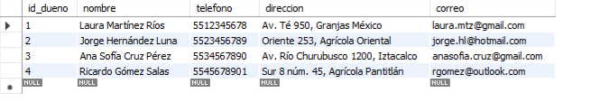
Figura 22. Captura propia en MySQL Workbench. Quedan cuatro dueños.
PASO 10 · SELECT Filtrar y ordenar con WHERE y ORDER BY
SELECT elige qué columnas ver, WHERE qué filas y ORDER BY en qué orden (DESC es de mayor a menor). Con AND se deben cumplir las dos condiciones.
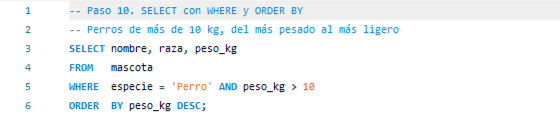
Resultado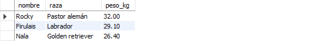
Figura 23. Captura propia en MySQL Workbench. Firulais ya aparece con 29.10 kg por el UPDATE del paso 8.
PASO 11 · SELECT Rangos y patrones con BETWEEN y LIKE
BETWEEN filtra un rango, incluidos los extremos. LIKE busca patrones de texto. El % significa "cualquier cosa", así que 'S%' es "empieza con S". Los paréntesis agrupan el OR para que no se mezcle con el AND.
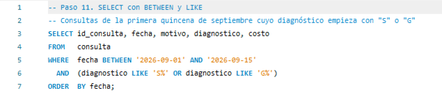
Resultado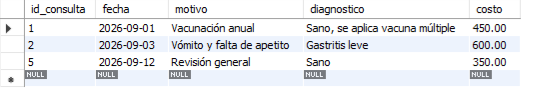
Figura 24. Captura propia en MySQL Workbench. Consultas del 1 al 15 de septiembre con diagnóstico que empieza con S o G.
PASO 12 · SELECT Consultar la vista
La vista v_mascotas_duenos se creó en el paso 7 del tema 1.4, cuando las tablas estaban vacías. Ahora que hay datos, se consulta igual que una tabla y ya trae unida la información de mascota y dueño.
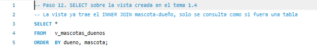
Resultado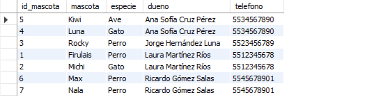
Figura 25. Captura propia en MySQL Workbench. La vista muestra datos de dos tablas sin escribir el JOIN.
PASO 13 · AGREGADO Funciones COUNT, SUM, AVG, MIN y MAX
Las funciones de agregado resumen muchas filas en un solo valor, como cuántas hay (COUNT), su total (SUM), su promedio (AVG), el menor (MIN) y el mayor (MAX). AS le pone un nombre claro a cada columna del resultado.
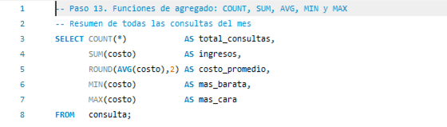
ResultadoFigura 26. Captura propia en MySQL Workbench. Resumen de las consultas del mes.
PASO 14 · AGREGADO Agrupar con GROUP BY
GROUP BY aplica las funciones de agregado por grupo en lugar de a toda la tabla. Aquí da un renglón por especie, con cuántas mascotas hay y su peso promedio y máximo.
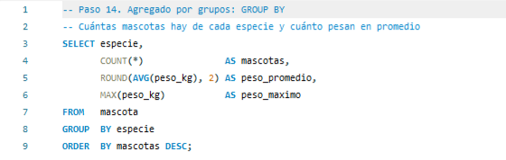
Resultado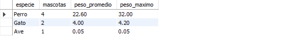
Figura 27. Captura propia en MySQL Workbench. Cuatro perros, dos gatos y un ave.
Observaciones. La base ya tiene 4 dueños, 4 veterinarios, 5 medicamentos, 7 mascotas, 8 consultas y 7 recetas. Con estos datos se trabajan las consultas multitabla, la seguridad y las transacciones de la Unidad II.